第2部 R言語のデータ処理
wass80
2017-03-10
Rでデータ処理
生データから情報を取り出す
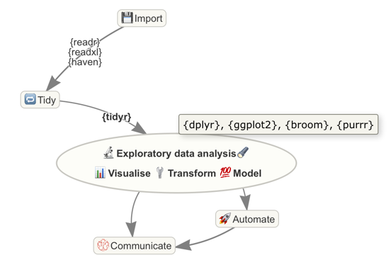
ライブラリを使う
- dplyr
- tdyr
- ggplot2
これら全部がHadleyの作っているtidyverseライブラリ群
library(tidyverse)Hadley?
- Rの神
- データ解析用の様々なライブラリを提供している
R for Data Science
Hadleyの書いたこの本を元にやっていく

とりあえず実践
Rに組み込まれているデータを使う
- iris あやめのガク(Sepal)と花弁(Petal)と品種のデータ
- esoph タバコと酒とガンのデータ
などが組み込まれている
iris
head(iris)## Sepal.Length Sepal.Width Petal.Length Petal.Width Species
## 1 5.1 3.5 1.4 0.2 setosa
## 2 4.9 3.0 1.4 0.2 setosa
## 3 4.7 3.2 1.3 0.2 setosa
## 4 4.6 3.1 1.5 0.2 setosa
## 5 5.0 3.6 1.4 0.2 setosa
## 6 5.4 3.9 1.7 0.4 setosa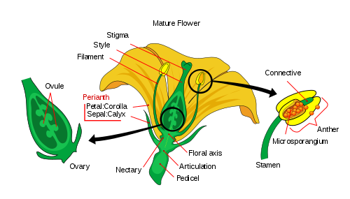
データフレーム
str(iris)## 'data.frame': 150 obs. of 5 variables:
## $ Sepal.Length: num 5.1 4.9 4.7 4.6 5 5.4 4.6 5 4.4 4.9 ...
## $ Sepal.Width : num 3.5 3 3.2 3.1 3.6 3.9 3.4 3.4 2.9 3.1 ...
## $ Petal.Length: num 1.4 1.4 1.3 1.5 1.4 1.7 1.4 1.5 1.4 1.5 ...
## $ Petal.Width : num 0.2 0.2 0.2 0.2 0.2 0.4 0.3 0.2 0.2 0.1 ...
## $ Species : Factor w/ 3 levels "setosa","versicolor",..: 1 1 1 1 1 1 1 1 1 1 ...- data.framecというclassのlist
- 要素のvectorはすべて同じ長さ
- Rでのデータの表現でよく使われる
とりあえずプロットしないことには
library(ggplot2)
ggplot(iris) +
geom_point(aes(x = Sepal.Width, y = Sepal.Length,
color = Species))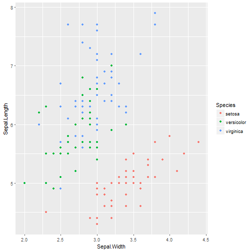
キモい構文
ggplot(iris) +
geom_point(aes(x = Sepal.Width, y = Sepal.Length,
color = Species))- 演算子オーバーロードです
ggplot(data)でプロットするデータを指定+でレイヤーを重ねるpointが追加されているpointの属性にはx,y.color,size等がある
aes データ系列
- データに依存する値を指定する
- 共通の値は
aesに入れない
ggplot(iris) +
geom_point(aes(x = Sepal.Width, y = Sepal.Length),
color = "blue", size = 2)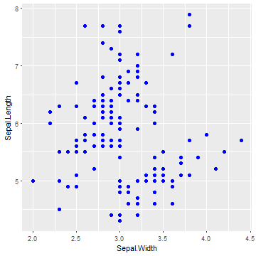
系統ごとにplot (facet)
facet_wrap(~ Species)を使う
ggplot(iris) +
geom_point(aes(x = Sepal.Width, y = Sepal.Length)) +
facet_wrap(~ Species)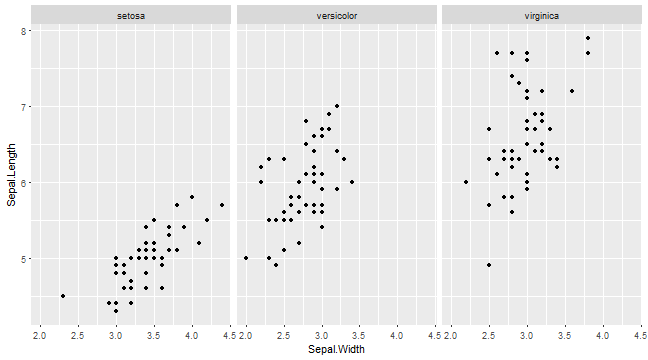
ヒストグラムも (stat)
- ヒストグラムのためには値を区切って数える前処理が必要になる
statで前処理を指定,x,yを求めてくれる- (
geom_barでは実はデフォルト)
ggplot(iris) +
geom_bar(aes(x = Sepal.Width, fill = Species),
stat = "count")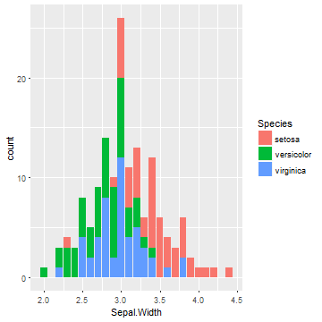
まとめ: ggplot2
- グラフ描画ライブラリ
- 機能はもっと豊富
dplyrでデータ変形
- 大きいデータを扱うライブラリ
library(nycflights13)
flights## # A tibble: 336,776 × 19
## year month day dep_time sched_dep_time dep_delay arr_time
## <int> <int> <int> <int> <int> <dbl> <int>
## 1 2013 1 1 517 515 2 830
## 2 2013 1 1 533 529 4 850
## 3 2013 1 1 542 540 2 923
## 4 2013 1 1 544 545 -1 1004
## 5 2013 1 1 554 600 -6 812
## 6 2013 1 1 554 558 -4 740
## 7 2013 1 1 555 600 -5 913
## 8 2013 1 1 557 600 -3 709
## 9 2013 1 1 557 600 -3 838
## 10 2013 1 1 558 600 -2 753
## # ... with 336,766 more rows, and 12 more variables: sched_arr_time <int>,
## # arr_delay <dbl>, carrier <chr>, flight <int>, tailnum <chr>,
## # origin <chr>, dest <chr>, air_time <dbl>, distance <dbl>, hour <dbl>,
## # minute <dbl>, time_hour <dttm>データテーブル
- R標準のデータフレームは遅いので, Hadleyの提供する
data.tableを使う - データフレームより制約が柔軟で, 速く処理できる
- 特にファイル入出力が速い
str(flights)## Classes 'tbl_df', 'tbl' and 'data.frame': 336776 obs. of 19 variables:
## $ year : int 2013 2013 2013 2013 2013 2013 2013 2013 2013 2013 ...
## $ month : int 1 1 1 1 1 1 1 1 1 1 ...
## $ day : int 1 1 1 1 1 1 1 1 1 1 ...
## $ dep_time : int 517 533 542 544 554 554 555 557 557 558 ...
## $ sched_dep_time: int 515 529 540 545 600 558 600 600 600 600 ...
## $ dep_delay : num 2 4 2 -1 -6 -4 -5 -3 -3 -2 ...
## $ arr_time : int 830 850 923 1004 812 740 913 709 838 753 ...
## $ sched_arr_time: int 819 830 850 1022 837 728 854 723 846 745 ...
## $ arr_delay : num 11 20 33 -18 -25 12 19 -14 -8 8 ...
## $ carrier : chr "UA" "UA" "AA" "B6" ...
## $ flight : int 1545 1714 1141 725 461 1696 507 5708 79 301 ...
## $ tailnum : chr "N14228" "N24211" "N619AA" "N804JB" ...
## $ origin : chr "EWR" "LGA" "JFK" "JFK" ...
## $ dest : chr "IAH" "IAH" "MIA" "BQN" ...
## $ air_time : num 227 227 160 183 116 150 158 53 140 138 ...
## $ distance : num 1400 1416 1089 1576 762 ...
## $ hour : num 5 5 5 5 6 5 6 6 6 6 ...
## $ minute : num 15 29 40 45 0 58 0 0 0 0 ...
## $ time_hour : POSIXct, format: "2013-01-01 05:00:00" "2013-01-01 05:00:00" ...filter (行の抽出)
filter(flights, air_time < 100) #100分未満のフライト## # A tibble: 105,687 × 19
## year month day dep_time sched_dep_time dep_delay arr_time
## <int> <int> <int> <int> <int> <dbl> <int>
## 1 2013 1 1 557 600 -3 709
## 2 2013 1 1 559 559 0 702
## 3 2013 1 1 629 630 -1 721
## 4 2013 1 1 629 630 -1 824
## 5 2013 1 1 632 608 24 740
## 6 2013 1 1 639 640 -1 739
## 7 2013 1 1 643 645 -2 837
## 8 2013 1 1 645 647 -2 815
## 9 2013 1 1 732 735 -3 857
## 10 2013 1 1 733 736 -3 854
## # ... with 105,677 more rows, and 12 more variables: sched_arr_time <int>,
## # arr_delay <dbl>, carrier <chr>, flight <int>, tailnum <chr>,
## # origin <chr>, dest <chr>, air_time <dbl>, distance <dbl>, hour <dbl>,
## # minute <dbl>, time_hour <dttm>select (列の抽出)
select(flights, dep_time, arr_time) # 離発着時刻## # A tibble: 336,776 × 2
## dep_time arr_time
## <int> <int>
## 1 517 830
## 2 533 850
## 3 542 923
## 4 544 1004
## 5 554 812
## 6 554 740
## 7 555 913
## 8 557 709
## 9 557 838
## 10 558 753
## # ... with 336,766 more rowsつまり
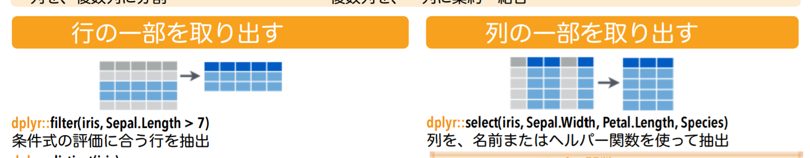
arrange (並び替え)
arrange(flights, desc(arr_delay)) # 遅れた順## # A tibble: 336,776 × 19
## year month day dep_time sched_dep_time dep_delay arr_time
## <int> <int> <int> <int> <int> <dbl> <int>
## 1 2013 1 9 641 900 1301 1242
## 2 2013 6 15 1432 1935 1137 1607
## 3 2013 1 10 1121 1635 1126 1239
## 4 2013 9 20 1139 1845 1014 1457
## 5 2013 7 22 845 1600 1005 1044
## 6 2013 4 10 1100 1900 960 1342
## 7 2013 3 17 2321 810 911 135
## 8 2013 7 22 2257 759 898 121
## 9 2013 12 5 756 1700 896 1058
## 10 2013 5 3 1133 2055 878 1250
## # ... with 336,766 more rows, and 12 more variables: sched_arr_time <int>,
## # arr_delay <dbl>, carrier <chr>, flight <int>, tailnum <chr>,
## # origin <chr>, dest <chr>, air_time <dbl>, distance <dbl>, hour <dbl>,
## # minute <dbl>, time_hour <dttm>mutate (新しい列)
f <- select(flights, distance, air_time) # 距離と時間
mutate(f, speed = distance / air_time) # 速さ## # A tibble: 336,776 × 3
## distance air_time speed
## <dbl> <dbl> <dbl>
## 1 1400 227 6.167401
## 2 1416 227 6.237885
## 3 1089 160 6.806250
## 4 1576 183 8.612022
## 5 762 116 6.568966
## 6 719 150 4.793333
## 7 1065 158 6.740506
## 8 229 53 4.320755
## 9 944 140 6.742857
## 10 733 138 5.311594
## # ... with 336,766 more rows%>%
- 他の言語で言うパイプ
- 右辺の返り値を左辺の第1引数にする
- tidyverseライブラリで提供されている
- 途中の一時変数がなくなる
c(1,3,5) %>% mean()## [1] 3さっきと同じもの
flights %>%
select(distance, air_time) %>% # select(flight, ...)
mutate(speed = distance / air_time)summarize (縮約)
flights %>%
summarise(delay = mean(arr_delay, na.rm=TRUE)) # 平均遅れ## # A tibble: 1 × 1
## delay
## <dbl>
## 1 6.895377group_by
flights %>%
group_by(dest) %>% # 目的地ごとに
summarise(delay = mean(arr_delay, na.rm=TRUE)) # 平均遅れ## # A tibble: 105 × 2
## dest delay
## <chr> <dbl>
## 1 ABQ 4.381890
## 2 ACK 4.852273
## 3 ALB 14.397129
## 4 ANC -2.500000
## 5 ATL 11.300113
## 6 AUS 6.019909
## 7 AVL 8.003831
## 8 BDL 7.048544
## 9 BGR 8.027933
## 10 BHM 16.877323
## # ... with 95 more rows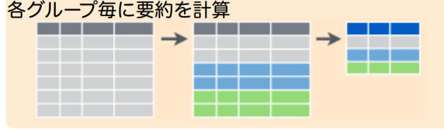
これSQLでは?
- 実際, sqlliteの操作などにも使える
- dplyrはデータベースに対する, 一般的なAPI
まとめ: dplyr
- データベースに対する処理を行う
紹介: tidyr
- データの整形をして, dplyrで扱えるようにするライブラリ
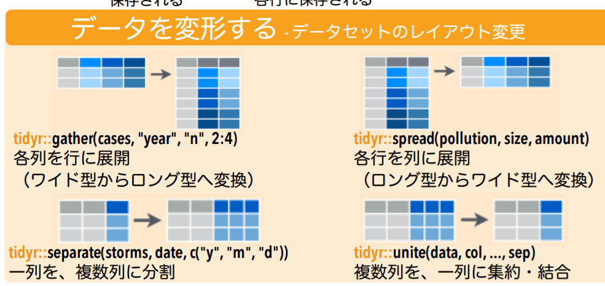
データ解析の流れ

- ビジュアライズとデータ変形を見てきた
- ここからModelを見出すことでデータ処理が完了する
- Modelとは変数の関係性のこと
Modelの発見
- まず, モデル群を考える
Y = a_1 X + a_2Z = a_1 X * a_2 Y + a_3- など
- 次にデータに合う係数を見つける
実践
library(modelr)
ggplot(sim1) + geom_point(aes(x=x, y=y))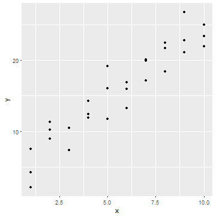
このデータに適合するモデルを考える
線形モデル
Y = a_1 X + a_2をモデル群として考える- ランダムに作った
model_aを係数として, どの直線が最も適合するか
model_a <- data.frame(a1 = runif(200, -5, 5),
a2 = runif(200, -20, 40))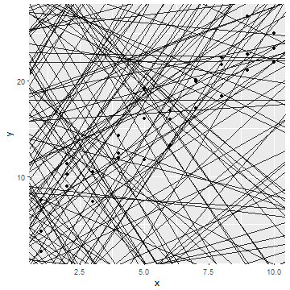
最小二乗法
- モデルに対して, Y軸での差の2乗の平均の平方根が小さいものが良いモデルとする
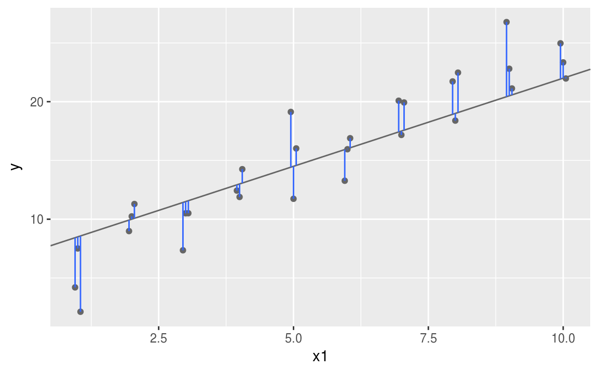
簡単にできるところまで
モデルを関数で定義
my_model <- function(a1, a2, data) a1 * data$x + a2
mini_data <- data.frame(x=c(1,2), y=c(3,5))
my_model(2, 5, mini_data)## [1] 7 9Y軸での差を求める
measure_distance <- function(a1, a2) {
diff <- sim1$y - my_model(a1, a2, sim1)
sqrt(mean(diff ^ 2)) # 各要素の2乗の平均の平方根
}差を求めてみる
model_a <- model_a %>%
mutate(dist = purrr::map2_dbl(a1, a2, measure_distance))- distで先程のmodelの直線をを色付
- 黒いものほど, 適合したmodelと言える
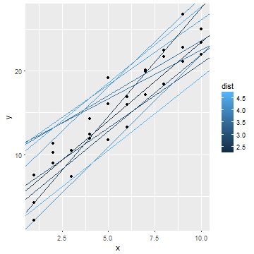
実際に求める
lmにモデル群とデータを渡す
sim1_a <- lm(y ~ x, data = sim1)
sim1_a$coefficients## (Intercept) x
## 4.220822 2.051533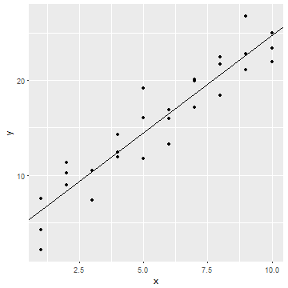
良さそう
まとめ: モデル
- データから結論を見つける
- モデルは線形以外にも多く有る
大まとめ

- データ解析の流れとして以下を見てきた
- 整形: tidyr
- ビジュアライズ: ggplot
- 変形: dplyr (+ purrr)
- モデル: Modelr (+ broom)
- Haddlyさんは情報発信まで含めてデータ解析と言ってる
ところで
- さっきから出てくる構文気持ち悪く無いですか?
y ~ xって何?aes(x = x, y = y), data = sim1も不思議library(dplyr)も変では%>%ってどうやって定義されてるの
- メタプログラミング編へ